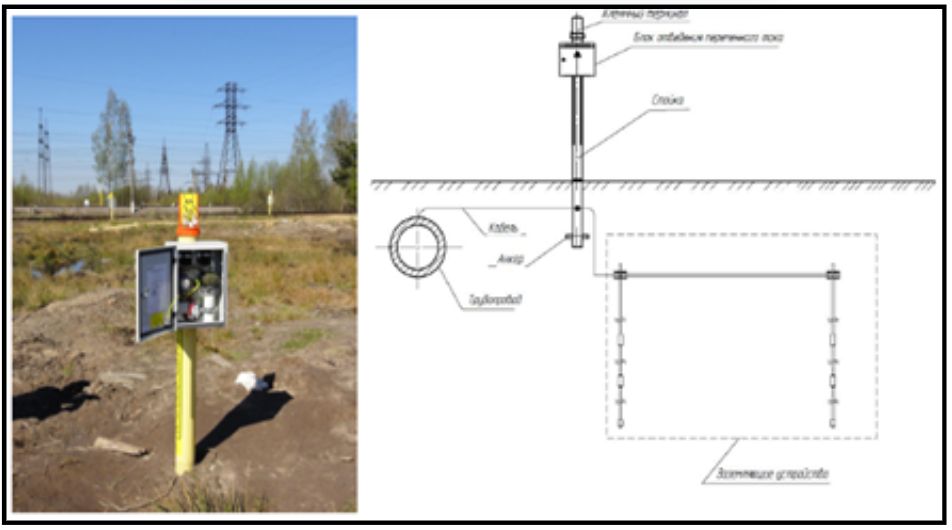
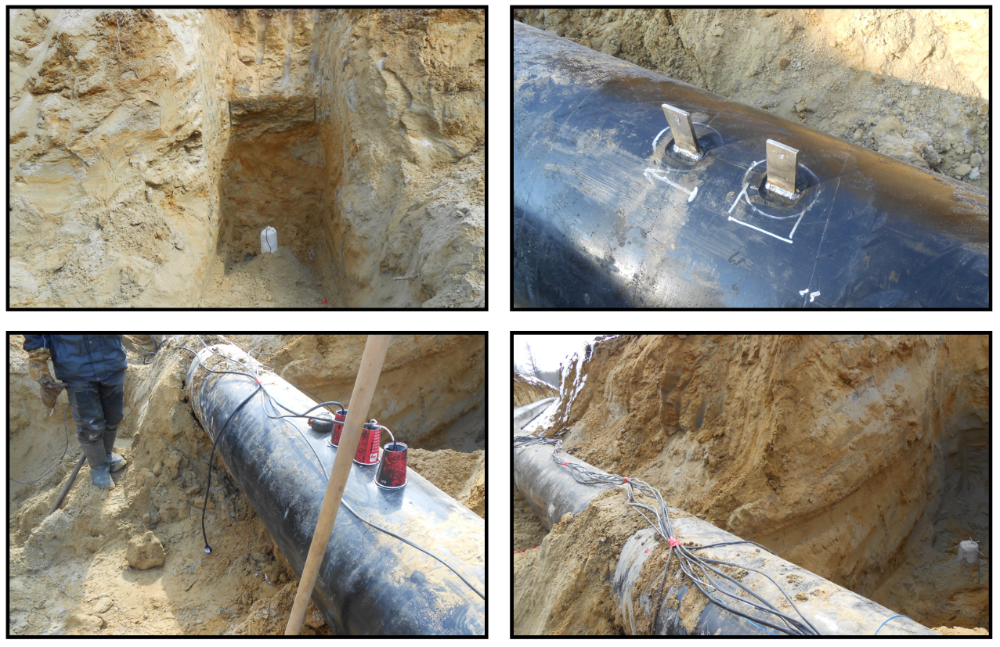
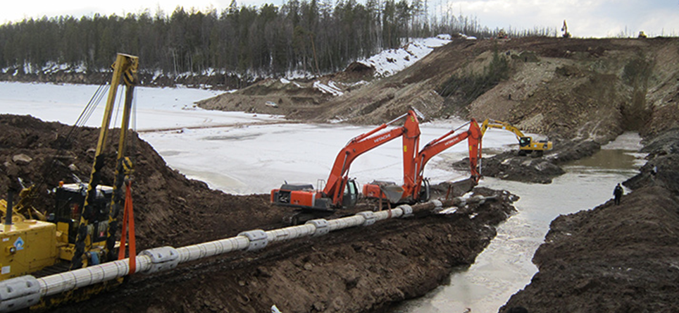

Исполнительная документация в строительствеЛокальный архив курса
Исполнительная документация на линейные объекты
Технологический трубопровод, магистральные трубопроводы нефти и газа · урок 58 из 68
Состав ИД для ТХ и ТКР
Вера СафуановаЭксперт строительного контроля с опытом работы в строительной сфере более 15 лет
Состав исполнительной документации на технологические и магистральные трубопроводы значительно отличается друг от друга и регламентируется разными нормативными актами. В уроке рассмотрим подробнее составы на данные разделы и разберем, каким нормативным актам стоит придерживаться.
Технологические трубопроводы
Для определения состава ИД воспользуемся следующими нормативными документами:
ВСН 478-86 Производственная документация по монтажу технологического оборудования и технологических трубопроводов
СП 75.13330.2011 Технологическое оборудование и технологические трубопроводы
Состав исполнительной документации на технологические трубопроводы
№
Наименование документа
Форма документа
Комментарий
1
Реестр исполнительной документации
можно принимать по СП 392.1325800.2018, ф.1.2 или ОРД Заказчика
2
Комплект рабочих чертежей с надписями о соответствии выполненных в натуре работ этим чертежам или о внесённых в них по согласованию с проектной организацией изменениях
3
Акт освидетельствования скрытых работ по монтажу трубопровода
Список сварщиков, операторов-термистов, дефектоскопистов
ГОСТ 32569-2013, форма 5
11
Список рабочих, допущенных к сборке разъёмных соединений трубопроводов с давлением более 10 МПа (100 кгс/см²) с контролируемым усилием натяжения
ГОСТ 32569-2013, форма 7
12
Акт на предварительную растяжку (сжатие) компенсаторов
ГОСТ 32569-2013, форма 9
13
Диаграмма нагрева, выдержки и охлаждения (при термической обработке)
14
Протокол замеров твёрдости
15
Паспорта, свидетельства о поверке на приборы, применяемые при испытаниях
16
Акт ревизии арматуры
ГОСТ 33257-2015, ф.Д.4
17
Паспорта и сертификаты на применённые материалы
18
Сертификаты соответствия оборудования и запорной арматуры требованиям ТР ТС 010/2011
Магистральные трубопроводы
Для определения состава ИД воспользуемся СП 392.1325800.2018 Трубопроводы магистральные и промысловые для нефти и газа. Исполнительная документация при строительстве (приложение А, рекомендуемое).
Также стоить учесть, что у многих Заказчиков имеется свой регламент по составу и оформлению исполнительной документации. К примеру, «Транснефть», «Газпром» и «Роснефть» и т.п. включают в этот список документы из разработанной организацией нормативно-технической документации. Они будут дополнять действующий перечень, формы дополнительных документов будут указаны в ОРД.
Состав исполнительной документации на магистральные трубопроводы
№
Наименование документа
Номер формы
Общие документы
1
Перечень субподрядных организаций и ответственных лиц, участвующих в строительстве
Форма N 1.1
2
Реестр исполнительной документации
Форма N 1.2
3
Ведомость установленной арматуры и оборудования в процессе производства работ, паспорта и заводская документация
Форма N 1.3
4
Ведомость изменений проектной документации
Форма N 1.4
5
Список сварщиков
Форма N 1.8
6
Допускной лист сварщика
Форма N 1.9
7
Акт освидетельствования ответственных конструкций
Форма N 1.10
Входной контроль
8
Акт результатов входного контроля МТР и оборудования
Форма N 2.1
9
Акт (ведомость) освидетельствования труб
Форма N 2.2
Геодезические работы
10
Акт освидетельствования геодезической разбивочной основы объекта капитального строительства
Форма N 3.1
11
Оперативный журнал геодезических работ
Форма N 3.2
12
Акт разбивки осей объекта капитального строительства на местности
Форма N 3.3
13
Акт сдачи реперов на наблюдение за сохранностью
Форма N 3.4
Земляные работы
14
Акт проведения рекультивации земли на участке производства работ
Форма N 5.2
15
Акт освидетельствования скрытых работ
Форма N 5.3
16
Акт засыпки (защитных обвалований, устройства амбаров для аварийного приема) уложенного трубопровода
Форма N 5.4
Итоговые документы
17
Ведомость недоделок
Форма N 13.1
18
Справка об устранении недоделок, выявленных приемочной комиссией
Форма N 13.2
Отдельный комплект документов составляется на раздел Электрохимической защиты (ЭХЗ). Это способ защиты, в данном случае трубопровода, от коррозии, путем воздействия электрического тока. Она замедляет электрохимические процессы, которые приводят к разрушению металла.

С виду маленькая работа, но с большим объемом исполнительной документации.
Работы ведут в соответствии с СП 424.1325800.2019 «Трубопроводы магистральные и промысловые для нефти и газа. Производство работ по противокоррозионной защите средствами электрохимзащиты и контроль выполнения работ».

Пример монтажа элекрохимзащиты на магистральном газопроводе энергокомплекса
Смотрите ниже подробную памятку с необходимым перечнем ИД на ЭХЗ (согласно СП 245.1325800.2015 «Защита от коррозии линейных объектов и сооружений в нефтегазовом комплексе»), а также перечень дополнительных документов в зависимости от разного вида работ.
Разрешение на право производства работ (Приложение А (рекомендуемое))
Форма журнала учета результатов входного контроля (Приложение Б (рекомендуемое))
Форма акта входного контроля материалов для производства противокоррозионных работ (Приложение В (справочное))
Форма протокола контроля качества подготовки поверхности к проведению работ по нанесению защитного покрытия (Приложение Г (справочное))
Форму журнала производства работ по нанесению защитного покрытия (Приложение Д (справочное))
Акты приемки и освидетельствования скрытых работ (Приложение Е (справочное))
Акт готовности оборудования к проведению пусконаладочных работ (Приложение Ж (обязательное))
Журнал производства работ по наладке оборудования на объекте (Приложение И (справочное))
Акт рабочей комиссии о приемке оборудования после индивидуального испытания (Приложение К (обязательное))
Акт рабочей комиссии о приемке оборудования после комплексного опробования (Приложение Л (обязательное))
Номенклатура пусконаладочных работ на средствах и установках ЭХЗ (Приложение М (рекомендуемое))
Дополнительно к этому перечню есть список ИД из СП 392.1325800.2018:
Акт освидетельствования скрытых работ при сооружении заземления (рабочего, защитного, линейно-защитного) – Форма № 9.1
Акт освидетельствования скрытых работ при сооружении анодного заземления – Форма № 9.2
Акт освидетельствования скрытых работ при сооружении протекторной установки – Форма № 9.3
Акт освидетельствования скрытых работ при прокладке кабеля – Форма № 9.4
Акт освидетельствования скрытых работ при сооружении контрольно-измерительных пунктов – Форма № 9.5
Акт освидетельствования электромонтажных работ при сооружении устройств электрохимической защиты – Форма № 9.6
Акт приемки электрооборудования под монтаж – Форма № 9.7
В случае прокладки трубопровода через водные преграды (реки, протоки и т.п.) также составляется дополнительный комплект документов:
Переходы через водные преграды
Акт промера глубин и водолазного обследования в створе подводного перехода (до начала работ) – Форма № 11.1
Ведомость промеров глубин, проектных фактических отметок дна реки по оси трубопровода – Форма № 11.2
Акт промеров глубин и водолазного обследования в створе подводного перехода (промежуточная приемка траншеи), при необходимости – Форма № 11.3
Ведомость промеров глубин фактических отметок дна траншеи по оси трубопровода (промежуточная), при необходимости – Форма № 11.4
Ведомость промера глубин (по оси готовой подводной траншеи) – Форма № 11.5
Акт промеров глубин и водолазного обследования в створе подводного перехода (после укладки трубопровода) – Форма № 11.6
Ведомость промера глубин (до верха образующей забалластированного трубопровода) – Форма № 11.7
Акт водолазного обследования в створе подводного перехода после укладки и замыва трубопровода – Форма № 11.8
Ведомость промера глубин водоема по оси подводного уложенного и замытого трубопровода – Форма № 11.9

В случае прокладки трубопровода через водные преграды (реки, протоки и т.п.) также составляется дополнительный комплект документов:
Переходы через водные преграды
Акт приемки-передачи подводного перехода строительной организацией техническому заказчику – Форма № 11.10
Акт приемки-передачи подводного перехода в монтаж с общей магистралью – Форма № 11.11
Акт выполнения берегоукрепительных и дноукрепительных работ – Форма № 11.12
Акт приемки перехода трубопровода через водную преграду – Форма № 11.13
Акт приемки готовой траншеи для укладки основной или резервной нитки подводного перехода – Форма № 11.14
Ведомость фактических отметок лотка тоннельного перехода – Форма № 11.15
Ведомость отметок верха образующей трубопровода в тоннельном переходе – Форма № 11.16
Журнал производства буровых работ – Форма № 11.17
Акт приемки пилотной скважины – Форма № 11.18
Акт приемки расширенной скважины и готовности ее под протаскивание трубопровода – Форма № 11.19
В случае прокладки трубопровода через водные преграды (реки, протоки и т.п.) также составляется дополнительный комплект документов:
Переходы через водные преграды
Акт приемки подземного трубопровода, выполненного методом ГНБ – Форма № 11.20
А в случае перехода трубопровода через автомобильные дороги следует составить следующие документы:
10 Переходы через автодороги
Акт укладки защитного футляра на переходе трубопровода через дорогу – Форма № 10.1
Акт промежуточной приемки перехода трубопровода через дорогу (автомобильную, железную) – Форма № 10.2
Перечень исполнительной документации на ЭХЗ:
Разрешение на право производства работ (Приложение А (рекомендуемое))
Форма журнала учета результатов входного контроля (Приложение Б (рекомендуемое))
Форма акта входного контроля материалов для производства противокоррозионных работ (Приложение В (справочное))
Форма протокола контроля качества подготовки поверхности к проведению работ по нанесению защитного покрытия (Приложение Г (справочное))
Форму журнала производства работ по нанесению защитного покрытия (Приложение Д (справочное))
Акты приемки и освидетельствования скрытых работ (Приложение Е (справочное))
Акт готовности оборудования к проведению пусконаладочных работ (Приложение Ж (обязательное))
Журнал производства работ по наладке оборудования на объекте (Приложение И (справочное))
Акт рабочей комиссии о приемке оборудования после индивидуального испытания (Приложение К (обязательное))
Акт рабочей комиссии о приемке оборудования после комплексного опробования (Приложение Л (обязательное))
Номенклатура пусконаладочных работ на средствах и установках ЭХЗ (Приложение М (рекомендуемое))
Дополнительно к этому перечню есть список ИД из СП 392.1325800.2018:
Акт освидетельствования скрытых работ при сооружении заземления (рабочего, защитного, линейно-защитного) – Форма № 9.1
Акт освидетельствования скрытых работ при сооружении анодного заземления – Форма № 9.2
Акт освидетельствования скрытых работ при сооружении протекторной установки – Форма № 9.3
Акт освидетельствования скрытых работ при прокладке кабеля – Форма № 9.4
Акт освидетельствования скрытых работ при сооружении контрольно-измерительных пунктов – Форма № 9.5
Акт освидетельствования электромонтажных работ при сооружении устройств электрохимической защиты – Форма № 9.6
Акт приемки электрооборудования под монтаж – Форма № 9.7
В случае прокладки трубопровода через водные преграды (реки, протоки и т.п.) также составляется дополнительный комплект документов:
Переходы через водные преграды
Акт промера глубин и водолазного обследования в створе подводного перехода (до начала работ) – Форма № 11.1
Ведомость промеров глубин, проектных фактических отметок дна реки по оси трубопровода – Форма № 11.2
Акт промеров глубин и водолазного обследования в створе подводного перехода (промежуточная приемка траншеи), при необходимости – Форма № 11.3
Ведомость промеров глубин фактических отметок дна траншеи по оси трубопровода (промежуточная), при необходимости – Форма № 11.4
Ведомость промера глубин (по оси готовой подводной траншеи) – Форма № 11.5
Акт промеров глубин и водолазного обследования в створе подводного перехода (после укладки трубопровода) – Форма № 11.6
Ведомость промера глубин (до верха образующей забалластированного трубопровода) – Форма № 11.7
Акт водолазного обследования в створе подводного перехода после укладки и замыва трубопровода – Форма № 11.8
Ведомость промера глубин водоема по оси подводного уложенного и замытого трубопровода – Форма № 11.9
В случае прокладки трубопровода через водные преграды (реки, протоки и т.п.) также составляется дополнительный комплект документов:
Переходы через водные преграды
Акт приемки-передачи подводного перехода строительной организацией техническому заказчику – Форма № 11.10
Акт приемки-передачи подводного перехода в монтаж с общей магистралью – Форма № 11.11
Акт выполнения берегоукрепительных и дноукрепительных работ – Форма № 11.12
Акт приемки перехода трубопровода через водную преграду – Форма № 11.13
Акт приемки готовой траншеи для укладки основной или резервной нитки подводного перехода – Форма № 11.14
Ведомость фактических отметок лотка тоннельного перехода – Форма № 11.15
Ведомость отметок верха образующей трубопровода в тоннельном переходе – Форма № 11.16
Журнал производства буровых работ – Форма № 11.17
Акт приемки пилотной скважины – Форма № 11.18
Акт приемки расширенной скважины и готовности ее под протаскивание трубопровода – Форма № 11.19
В случае прокладки трубопровода через водные преграды (реки, протоки и т.п.) также составляется дополнительный комплект документов:
Переходы через водные преграды
Акт приемки подземного трубопровода, выполненного методом ГНБ – Форма № 11.20
А в случае перехода трубопровода через автомобильные дороги следует составить следующие документы:
10 Переходы через автодороги
Акт укладки защитного футляра на переходе трубопровода через дорогу – Форма № 10.1
Акт промежуточной приемки перехода трубопровода через дорогу (автомобильную, железную) – Форма № 10.2
Впишите название организации, распечатайте и используйте ее в работе
Обратите внимание, что некоторые формы следует согласовать с Заказчиком для упрощения выполнения ИД. Например, схему сварных стыков можно составить в формате Excel с указанием данных, которые потребует Заказчик.
Примечание на 24.09.2026. Пункт 5 Порядка ведения ИД по приказу Минстроя № 344/пр изменён приказом № 369/пр с 01.03.2026. Перед применением изложенных здесь требований сверьте актуальную редакцию: приказ № 344/пр, изменение № 369/пр. Исходный учебный текст не изменён.
Файлы к уроку · 4
PDF привязаны к исходным встроенным страницам. Изображения взяты из этой страницы урока.
Новая статья WEB АРМШтатный PDF-экспорт · SHA-256 c19dbee404a4903245660ef4d401b37327b8fb657d0912dcfe1070fa52659df1
ec8a9135e07876b80571.pngИсходное изображение · SHA-256 ec8a9135e07876b805712a532590521ed5ba5812dff28f91fe8efefe6ac5a8dc
3658b6e618af924c778c.pngИсходное изображение · SHA-256 3658b6e618af924c778c7a8d7c3ab59987f6827d217eaebdb464a22ebbfb1858
92f379c0cdf90cea8a85.pngИсходное изображение · SHA-256 92f379c0cdf90cea8a854cd39e99065b51aceb8e8081b5c46c8a28394776df53

{kind=link}
{kind=link}